CHAPTER
ONE
Search Engines
The first screen to greet
you once you switch on your computer is the desktop. It varies from machine to
machine. The small icons you see on the left of the screen will be different for
me, for you and definitely not the same for the Queen of England. The desktop
is like a real estate and you are the agent. The houses you build will be the
icons you see on your desktop. So you can construct a villa, a cabin a mansion
or a hut. It’s all up to you!
The first thing you need to
do once you get connected is install the Internet browser. It is your passport
to the net. Internet Explorer and Netscape are the two popularly used Internet
browsers. Click on the multipurpose `Start` button and from the menu click on
`Programs`. From the Programs list select `Internet Explorer`. Or then, simply
click on the Internet Explorer symbol, an `e`, which is right next to the Start
button on the task bar. This done, your journey on the Internet begins.
The first website the
browser takes you to is the Microsoft System Network (MSN) site at www.msn.com.
This is a daily changing site created by Microsoft. What you see today will not
be the same tomorrow as the site is updated everyday. Today’s headline is the match
fixing racket, tomorrow it will talk about Hrithik’s new blockbuster film and
the day after it may sympathise with the plight of the earthquake victims. Each
new day brings in fresh information on this site.
The most frequent activity
on the net is searching for information. The Internet with its innumerable
sites is a treasure chest of news, views, opportunities and offers. But how do
you get the information you want? If you needed to know more about the latest
infectious disease plaguing the Germen Shepard breed of dogs, what do you do?
Do you hire Sherlock Holmes to track down the criminal anopheles mosquito or
then surround all the water puddles where the culprit takes refuge?? To make
our journey elementary my dear Watson, we simply resort to the services of a
`Search Engine`.
|
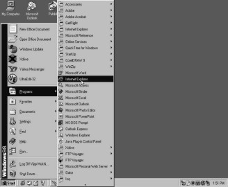 |
|
|
Screen 1. 1 |
Screen 1. 2 |
There are a vast number of search engines that classify the information for us. One such engine is `Yahoo!`. And no, this 'yahoo' has nothing to do with the junglee Shammi Kapoor, although these days the Internet and his name seem almost synonymous! To visit the site all you need to do is simply type in 'yahoo' in the address bar. The computer automatically converts it into its full address format of http:// www.yahoo.com. Or then if you aren’t feeling so lazy, you may enter www.yahoo.com yourself.You are welcomed by the attractive Yahoo! website. The first page of the website gives you a sneak preview of all that the site has to offer. In order to find something, all you need to do is simply type in what you are searching for. Here we have typed in 'kids'. You may search for whatever information you want, from the mating of the koala bears to the footprints of the Abominable Snowman, anything under the sun, moon, stars, satellites, spaceships and dish antennae. Once you have entered what you want Yahoo! to search for, click on the `Search` button. This will submit your search to the site and allow it to find the related information for you.
|
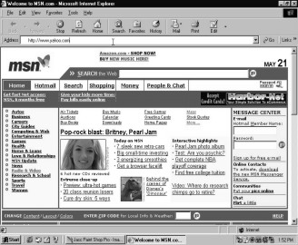 |
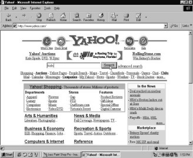 |
|
Screen 1. 3 |
Screen 1. 4 |
The site gives you all the matches that relate to the word 'kids'. Yahoo! has a separate site for kids called `Yahooligans!`. You can either visit this site or then any of the other 41 category matches it has found for you. This page displays 20 of the matches. You can move to the next page to view the remaining 21 site matches. The search is intelligent. It understands that kids and children mean the same thing and thus gives you all the necessary links to the infant world. Links or hyperlinks are the other sites you can visit. When your cursor changes from an arrow to a hand, it is your signal that this word is a link that will take you to a new site. Inspired by the magic of Aamir Khan’s thumb to hail a ride, the computer decided to respond only to the hand signal to drive you from one site to another.
Here when the arrow changes to a hand on `Sites for kids`, you can click on it to visit the Yahooligans! site. The colourful website of Yahooligans! allows you to make a new search for what you want to know for, on, or about children. Since stories is what pleases children the most, let us go learn some new bedtime tales to relate. So punch in the word 'stories' in the search bar and wait for Yahooligans! to spin its yarn of fables and anecdotes.
|
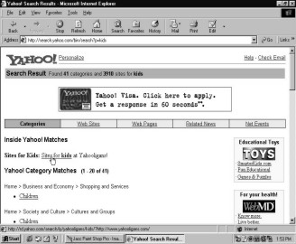 |
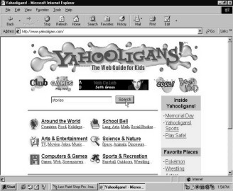 |
|
Screen 1. 5 |
Screen 1. 6 |
Yahooligans! comes up with a plethora of 733 story site matches. You can choose from among the various sites it offers, like stories on Christianity, Hallowe’en, languages etc. Let’s select the tales on Thanksgiving. After all, kids need to be taught the importance of gratitude.
|
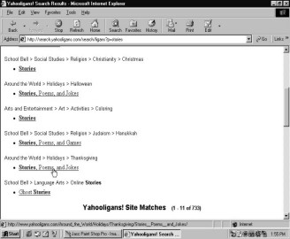 |
|
|
Screen 1. 7 |
Screen 1. 8 |
And boy, doesn’t Yahooligans! agree with me on that one!! Right from how Aristotle celebrated Thanksgiving to Reader’s Digest’s views on this festival, Yahooligans! has cooked up quite a big selection of turkey stories. Let’s visit dear old grandma’s farm for the real flavour of the turkey and of course the stories too! Nobody cooks them better than she does!!
Thanksgiving on the Farm is on the site `geocities`. A quick glance at the status bar, which stretches at the bottom of your screen, will confirm this observation. Geocities offers you further links on Thanksgiving. By clicking on `Home` you will be taken to the first page which contains stories by cyber grandma.
|
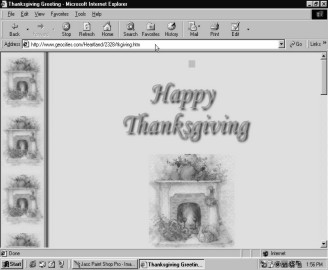 |
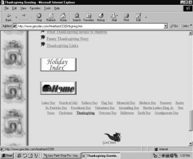 |
|
Screen 1. 9 |
Screen 1. 10 |
The Back button allows you to revisit the page you just came from. So if grandma’s stories and turkey ain’t tasty enough for you, return to the previous page.
|
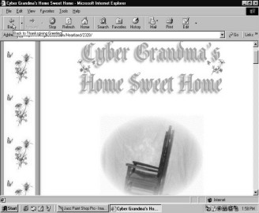 |
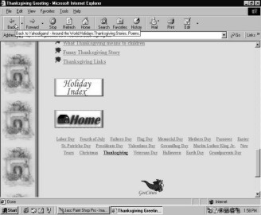 |
|
Screen 1. 11 |
Screen 1. 12 |
One more click on the `Back` button will transport you to the Thanksgiving Greetings page. Another click will take you to the Yahooligans! site. Instead of continuously clicking on the `Back` button to take you to the Yahoo! site, click on the dropdown arrow next to this button. It will give you a list of all the sites you have visited. Simply choose Yahoo! from there and you will instantaneously be transferred to the Yahoo! website. Now you are all set to conduct a new search.
|
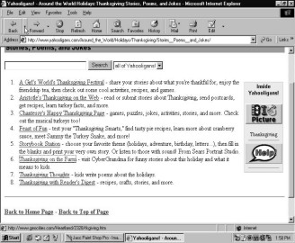 |
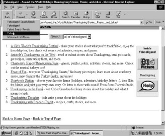 |
|
Screen 1. 13 |
Screen 1. 14 |
Now let us go on a tour to discover India. Who knows like Christopher Columbus you too may land up in America instead? Actually this is really possible with a net search. Most of the times you rarely find what you are searching for. With a million new sites coming up each day, the search engines are definitely overworked. They give you more than what you ask for. Each search engine has its own search results. No two engines will give you the same links. The search in Yahoo! for India gives us 339 category matches. Quickly browse through these matches and you will realize that another search engine comes up with an entirely different set of links on our country.
|
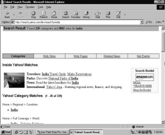 |
|
|
Screen 1. 15 |
Screen 1. 16 |
|
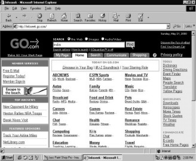 |
|
Screen 1. 17 |
Type in the address of another search engine in the address bar. Punch in www.infoseek.go.com and let us see the results that this search can output on India. You will notice that the Infoseek website greatly differs from that of Yahoo! Each site has its own style and its own appearance. This is because every website wants to be distinct and unique. They don’t even want to be asscoiated with the expression 'like two peas in a pod'. So every site aims at making their pages more attractive and more user friendly than the other. Type in 'india' in the search bar and click on the `Find` button to obtain the results.
Infoseek gives you a web directory of topics that it has personally visited on India. These cyber chef’s recommendations include travel, news and history on the land of snake charmers and elephants. Besides these handful of directory topics, it also gives you further links on our country. Scroll down the page and to view the next ten links, click on the hand.
|
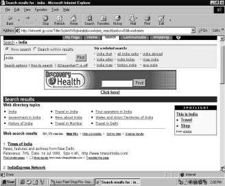 |
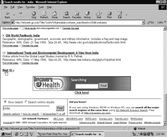 |
|
Screen 1. 18 |
Screen 1. 19 |
The next page will contain the next ten sites on India that Infoseek has to offer. At the bottom of the page you have the option of moving on to the next ten sites or then going back to the previous ten sites. Let us return to the first ten sites. By now you must have noticed that these matches are different from the ones Yahoo! gave us. Let us now visit the Times of India site. You don’t need to exit from the Infoseek site or type in the address of the Times of India site to get there. By merely clicking on the link in the Infoseek page you will be taken to the website of India’s leading newspaper.
|
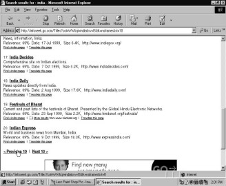 |
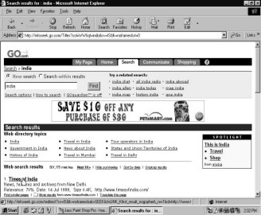 |
|
Screen 1. 20 |
Screen 1. 21 |
This is the reason why the Internet is called the World Wide Web. You can use one site to move on to another. The Times of India site gives you the daily news, the murders, the scams, the election results, the sensex fall et al. The complete ball of news is on your screen. You can read the entire newspaper on the net itself!
|
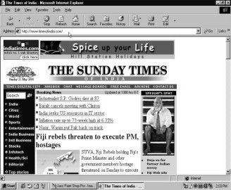 |
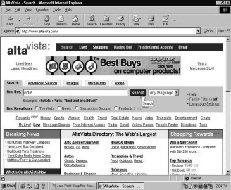 |
|
Screen 1. 22 |
Screen 1. 23 |
Let us check out the functioning of another search engine. Type in www.altavista.com in the address bar. Type in 'india' in the search bar and click on the `Search` button. Altavista will conjure up its very own search result. Each search engine is like a chef, whipping up his own speciality, his own recommendations. Altavista gives you links of other Indian websites like www.indiatimes.com and www.123india.com that have their own search locomotive. Let us make a quick trip to the www.123india.com site.
|
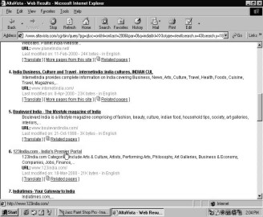 |
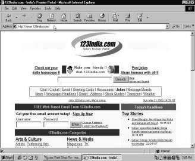 |
|
Screen 1. 24 |
Screen 1. 25 |
You can do a search within a search by using this site to further continue your search on India. And from those links you can search some more. The process is endless. You can spend the whole of the next 365 days just taking a lantern to learn some more about our country. The websites on India will keep changing, a few thousand new ones will come up, some hundred more search engines having their own unique results will take birth.... The circle will never stop!!
To recapitulate the sites you have visited, click on the dropdown near the Back button. Let us select Yahoo! once more. If nothing else it may just make Shammi Kapoor happy!
|
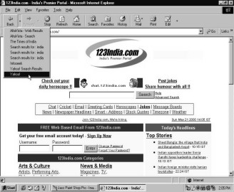 |
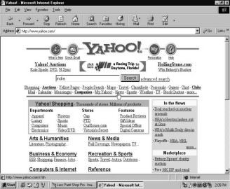 |
|
Screen 1. 26 |
Screen 1. 27 |
Time to update ourselves on the current affairs. Click on the `News` link to soak in all the happenings around the world. To read in detail any story that catches your fancy, simply click on the story title. The entire article will loom up before you.
|
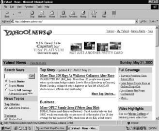 |
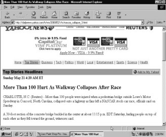 |
|
Screen 1. 28 |
Screen 1. 29 |
Back to Yahoo! and this time let us chill for a while. Click on the `Recreation & Sports` link to put your feet up and relax.
|
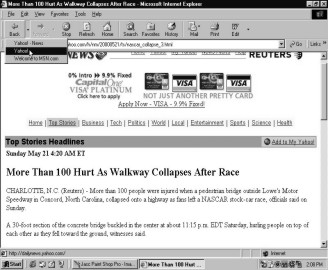 |
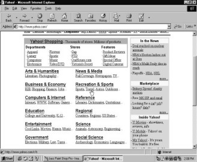 |
|
Screen 1. 30 |
Screen 1. 31 |
From the innumerable options available you can visit any that you desire. Plan to take a tour around the world to get away from the pressures at work? Or want to know what time you need to go fetch your boss’ girlfriend from the airport? Visit `Air Travel`. It will give you information on the best tours, discounts and travel packages floating around. Click on `Flight Arrivals` to confirm the hour, minute and second you need to be at the airport. You don’t want to be sacked from your job just coz little miss had to wait a few extra minutes for you to show up, do you?!
|
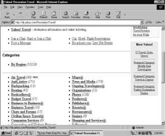 |
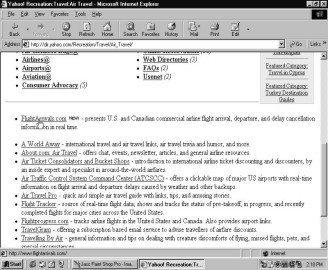 |
|
Screen 1. 32 |
Screen 1. 33 |
|
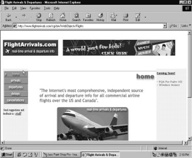 |
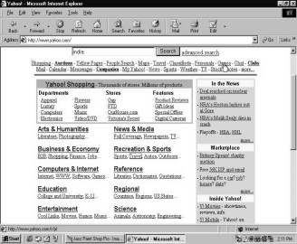 |
|
Screen 1. 34 |
Screen 1. 35 |
A click on `Home` will take you back to Yahoo! where it’s time to play a few games. The ride from the airport and back was a rough one. Need to wind down, do you? Well, no way better than a few relaxing games. Yahoo! games offers you a whole toy store of board and card games. Choose any game of your choice and just do it!!
Most portals provide you with the facility to conduct a search on any topic that pleases you. Portals are like buffet tables offering you a wide variety of delicacies (read: features) from chatting to searching. Websites on the other hand are like Italian chefs, specializing in pizzas and pastas, and thus can offer you fewer features and options.
However, I’m sure that you will agree with me how simple, exciting and of course endless a search on the net can be. Whatever you need, want and desire is all tucked away very comfortably in the innumerable search engine wagons. Want to know some more about the results of the football match between France and Spain or then the outcome of the Presedential elections at Timbaktu? Well, just log on to one of the search engines to get the answers to all your questions!
Ride On
Some
more search engines